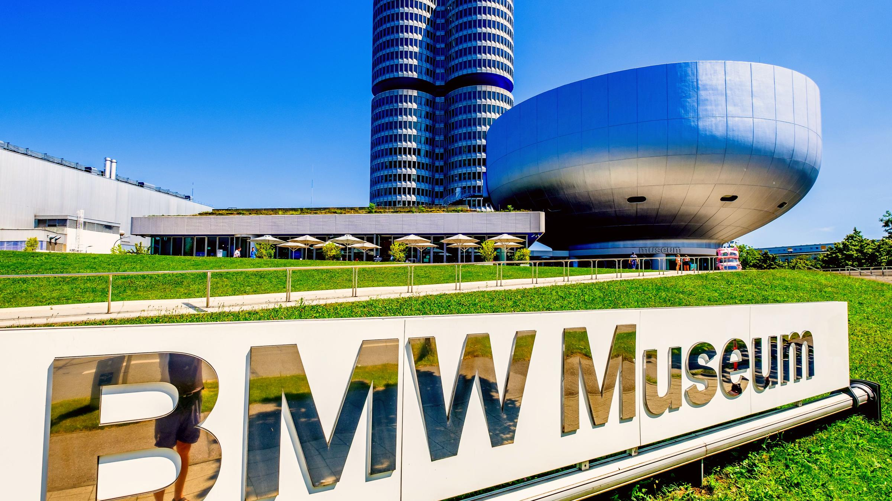
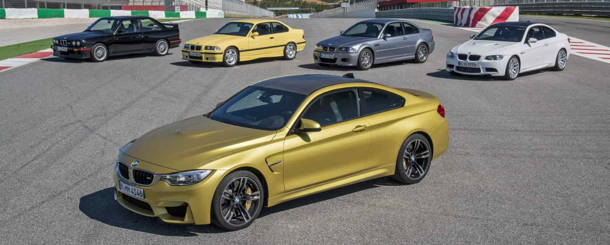

BMW History

BMW, German automaker noted for quality sports sedans and motorcycles and one of the most prominent brands in the world. Headquarters are in Munich.
It originated in 1916 as Bayerische Flugzeug-Werke, a builder of aircraft engines, but assumed the name Bayerische Motoren Werke in July 1917 and began producing motorcycles in the 1920s. BMW entered the automobile business in 1928. The company’s R32 motorcycle set a world speed record that was not broken until 1937.
During World War II BMW built the world’s first jet airplane engines, used by the Luftwaffe, Germany’s air force.
After the war the company tried to move into the small-car market but found that it could not compete effectively against Volkswagen’s compact, inexpensive autos. By 1959 the company was on the verge of bankruptcy, and its managers were planning to sell the firm to Daimler-Benz.
In that year, however, BMW pulled out of its financial slump; German entrepreneur Herbert Quandt acquired a controlling interest in the firm, and BMW introduced its 700 series, soon followed by the equally successful 1500 model. At about the same time, the company introduced a new series of motorcycles that were particularly popular in the United States.

BMW was firmly established as a premium automobile brand by the end of the 20th century. In a failed attempt to gain market share as a sport-utility vehicle company, BMW purchased the Rover Group in 1994 but lost roughly $4 billion before selling the Land Rover brand to Ford in 2000.
BMW saw great success with the relaunch of the British MINI in 2001, however, and another British brand, Rolls-Royce, became part of BMW in 2003. Members of the Quandt family continued to hold a significant stake in the company.
BMW M: The History of BMW M Cars

Back in 1972 Robert A. Lutz was a Board member at BMW. A gifted salesman, he brought the American motto “win on Sunday, sell on Monday” to Europe, and the newly founded BMW Motorsport GmbH was charged with turning it into reality. According to Lutz “a company is like a human being.
As long as it goes in for sports, it is fit, well-trained, full of enthusiasm and performance.” Given the optimism of the 1970s – everything was getting more colourful, faster, sportier – the timing was perfect. The company name was later slimmed down to create BMW M GmbH, adding fuel to a legend that has lost none of its magic in the years since.

BMW M3 E30
The first BMW M3 was based on the E30 3 Series and was intended to be a homologation special to satisfy the Deutsche Tourenwagen Meisterschaft and Group A Touring rules, which required a total of 5,000 of the base model to be built with a further 500 evolution specials. It was presented to the public at the 1985 Frankfurt Motor Show, and began production from March 1986 to June 1991.
The E30 M3 was mainly produced in the coupé body style, but limited volumes of convertibles were also produced.

The 1987 season heralds one of the most legendary periods of the DTM when the BMW M3 attracts massive crowds of fans to the race tracks and offers breathtaking motor racing.
Roberto Ravaglia wins the title of World Touring Car Champion in the very first year. “Winnie” Vogt secures the European Championship for BMW and the German Championship is won by Eric van de Poele in an M3.
A further five national titles are only the beginning of an unprecedented series of successes. In the 1989 season, the M3 is at the peak of its phenomenal career.
After the world and European championship titles, Roberto Ravaglia also wins the German championship. BMW achieves a double victory at the 24-hour race on the Nürburgring.
It is also Ravaglia who wins both races at the season finale in Hockenheim in 1992, ending BMW's first major chapter in the DTM with a bang. The stunning result after six years: one world championship title, two European championship titles, over 60 national championship titles, seven European mountain championship titles and five Rally Cups.
At the 24-hour races on the Nürburgring and in Spa-Francorchamps, eight victories are achieved. This makes the BMW M3 the world's most successful touring car of all time.

BMW M5 E39
it was the ridiculous output of 400bhp from the new 5.0 litre V8 – a figure that seemed absurd back in 1998. Second – the thing that really made me lose my collective shit – was the four exhausts nestled within the back bumper. Four exhausts…on a sober executive saloon? This was unheard of. At the time, four exhausts was the exclusive reserve of the Italian supercar aristocracy; yet here was this Bavarian family box elbowing its way into their Polo club. From that moment on, the M5 owned me.
BMW is the name of the power